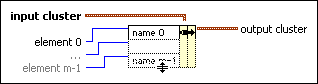

Bundle By Name Function
Owning Palette: Cluster, Class, & Variant VIs and Functions
Requires: Base Development System
Replaces one or more cluster elements. This function refers to cluster elements by name instead of by their position in the cluster.
After you wire the node to an input cluster, right-click the name terminals to select elements from the shortcut menu. You also can use the Operating tool to click the name terminals and select from a list of cluster elements. The connector pane displays the default data types for this polymorphic function.

 Add to the block diagram Add to the block diagram |
 Find on the palette Find on the palette |